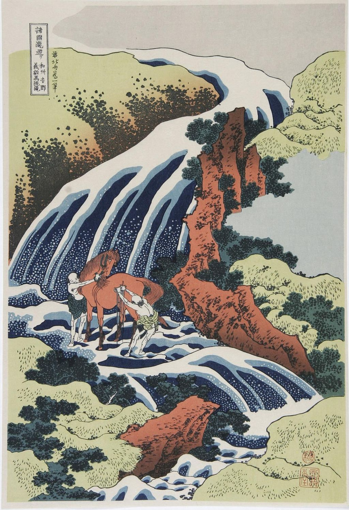

<head>
<meta charset="UTF-8" />
<meta name="keywords" content="drawing, painting" />
<meta name="description" content="drawings by Sunjy" />
<title>Sunjy</title>
<link rel="shortcut icon" type="image/x-icon" href="../../mImages/mCommon/favicon.ico" media="screen" />
<link rel="stylesheet" type="text/css" href="../../mCsses/mCommon/mCssA.css" />
<link rel="stylesheet" type="text/css" href="../../mCsses/mCommon/mCssB.css" />
<link rel="stylesheet" type="text/css" href="../../mCsses/mCommon/mCssC.css" />
<link rel="stylesheet" type="text/css" href="../../mCsses/mCommon/mCssD.css" />
<link rel="stylesheet" type="text/css" href="../../mCsses/mContent/mCssA.css" />
<link rel="stylesheet" type="text/css" href="../../mCsses/mContent/mCssB.css" />
<link rel="stylesheet" type="text/css" href="../../mCsses/mContent/mCssC.css" />
<link rel="stylesheet" type="text/css" href="../../mCsses/mContent/mCssD.css" />
</head>
<script type="text/javascript" src="../../mScripts/mContent/mContentAA.js" /></script>
<script type="text/javascript" src="../../mScripts/mContent/mContentAB.js" /></script>
<script type="text/javascript" src="../../mScripts/mContent/mContentAC.js" /></script>
<script type="text/javascript" src="../../mScripts/mContent/mContentAD.js" /></script>
<script type="text/javascript"></script> 
<script type="text/javascript">
document.write('<div class="mImgAbsolute"></div>');
/*
document.write('<p class="mFontSizeBColor" />From a white paper...</p>');
document.write('<table class="center"><tr><td>');
document.write('');
document.write('</td></tr></table>');
*/
</script>


<script type="text/javascript">
document.write('<p class="mFontSizeBColor" />Horse-Wax Waterfall</p>');
document.write('<p class="mFontSizeSColor" />By Katsushika Hokusai. “A Tour of the Waterfalls of the Provinces” by Katsushika Hokusai is a series of landscape woodblock prints by the Japanese ukiyo-e artist Hokusai.<br><br>Completed between 1833–34 and containing eight prints, it was the first ukiyo-e series to approach the theme of falling water.<br><br>“The Waterfall Where Yoshitsune Washed His Horse at Yoshino in Yamato Province” print is a touching depiction of the relationship between humans, animals, and nature.<br><br>The background consists of a waterfall flowing powerfully through a deep valley of trees and foliage. The tiers of water resemble giant hands embracing the earth with fingers spread open.<br><br>Hokusai’s detailed work can be seen in the two small figures washing the magnificent horse. However, elsewhere he has used thick, bold brushstrokes of white against the blue water.<br><br>The specks of white show the bubbles and foam of the waterfall.<br><br>The series was acclaimed for its innovative and expressive depictions.<br><br>The waterfalls take up most of each sheet, dwarfing the scenes’ human inhabitants, and are rendered by Hokusai with a powerful sense of life, reflecting his animistic beliefs.<br><br></p>');
document.write('<table class="center" /><tr><td>');
document.write('<br>Completed between 1833–34 and containing eight prints, it was the first ukiyo-e series to approach the theme of falling water.<br><br>“The Waterfall Where Yoshitsune Washed His Horse at Yoshino in Yamato Province” print is a touching depiction of the relationship between humans, animals, and nature.<br><br>The background consists of a waterfall flowing powerfully through a deep valley of trees and foliage. The tiers of water resemble giant hands embracing the earth with fingers spread open.<br><br>Hokusai’s detailed work can be seen in the two small figures washing the magnificent horse. However, elsewhere he has used thick, bold brushstrokes of white against the blue water.<br><br>The specks of white show the bubbles and foam of the waterfall.<br><br>The series was acclaimed for its innovative and expressive depictions.<br><br>The waterfalls take up most of each sheet, dwarfing the scenes’ human inhabitants, and are rendered by Hokusai with a powerful sense of life, reflecting his animistic beliefs.<br><br>" />');
document.write('</td></tr></table>');
</script>


